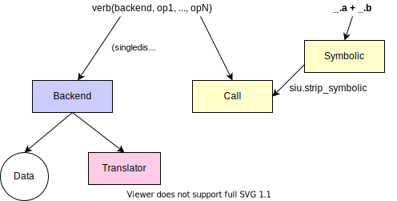

import pandas as pd
pd.set_option("display.max_rows", 5)Programming guide
Programming guide
Warning
If you want to get started analyzing data, see the guide. This guide gives an overview of how to implement and extend most parts of siuba. It also discusses the rationale behind siuba’s architecture.
Overview
This document can be thought of as roughly having two segments. The core analysis interface gives users flexibility to independently specify data groupings, table verbs, and column operations. It also highlights a critical piece of siuba’s design–that its column operations correspond to pandas Series methods.
Here’s an example of this interface in use, colored with links the relevant sections.
The lazy execution interface allows users to declare what they want to perform, so developers can create backends to optimize how to execute it on different data sources (e.g. SQL).

Column operations
In general, column operations in siuba are pandas Series methods.
For example, the code below compares two ways to produce the same result: the DataFrame.assign() method, and siuba’s mutate() function.
from siuba.data import cars
from siuba import mutate
# pandas assign method
cars.assign( demean = lambda d: d.mpg - d.mpg.mean())
# siuba mutate function
mutate(cars, demean = lambda d: d.mpg - d.mpg.mean())| cyl | mpg | hp | demean | |
|---|---|---|---|---|
| 0 | 6 | 21.0 | 110 | 0.909375 |
| 1 | 6 | 21.0 | 110 | 0.909375 |
| ... | ... | ... | ... | ... |
| 30 | 8 | 15.0 | 335 | -5.090625 |
| 31 | 4 | 21.4 | 109 | 1.309375 |
32 rows × 4 columns
Note that both are using pandas Series methods under the hood. This means that you can use and debug Series methods just like you would with pandas.
For grouped data, or a SQL database, siuba can’t use Series methods because they don’t exist. For example, on grouped data, the same operation above in pandas would be..
# create grouped data
g_cyl = cars.groupby('cyl')
# error: g_cyl doesn't have an .assign method! :/
# g_cyl.assign
cars.assign(demean = g_cyl.mpg.transform(lambda x: x - x.mean()))| cyl | mpg | hp | demean | |
|---|---|---|---|---|
| 0 | 6 | 21.0 | 110 | 1.257143 |
| 1 | 6 | 21.0 | 110 | 1.257143 |
| ... | ... | ... | ... | ... |
| 30 | 8 | 15.0 | 335 | -0.100000 |
| 31 | 4 | 21.4 | 109 | -5.263636 |
32 rows × 4 columns
In this case, the siuba code works similar to the pandas code above, but stays the same as in the ungrouped example:
mutate(g_cyl, demean = lambda d: d.mpg - d.mpg.mean())For SQL, it needs to go through a process to convert it to a SQL query using SQLAlchemy. One key step in this process is understanding how siuba can work on a DataFrame or a SQLAlchemy connection.
Table verbs
You may be wondering how a siuba function, like mutate, could work on a SQL database. This is because these functions are defined using a technique called single dispatch. This approach allows you to define class-specific versions of a function.
The code below creates a function called head(), with an implementation that works specifically on a DataFrame.
import pandas as pd
from siuba.dply.verbs import singledispatch2
# DataFrame version of function ---
@singledispatch2(pd.DataFrame)
def head(__data, n = 5):
return __data.head(n)
head(cars, 2)| cyl | mpg | hp | |
|---|---|---|---|
| 0 | 6 | 21.0 | 110 |
| 1 | 6 | 21.0 | 110 |
We can define a SQL specific version, that acts on a SqlAlchemy Table by registering a new function, _head_sql.
# SQL version of function ---
from sqlalchemy import Table, Column, MetaData
@head.register(Table)
def _head_sql(__data, n = 5):
return __data.select().limit(n)
table = Table("some_table", MetaData(), Column('a'), Column('b'))
print(
head(table, 2)
)SELECT some_table.a, some_table.b
FROM some_table
LIMIT :param_1why use singledispatch rather than a class method like mtcars.head()?
There are two big benefits:
- Anyone can cleanly define and package a function. Using it is just a matter of importing it. With a method, you need to somehow put it onto the class representing your data. You end up with 300+ methods on a class.
- Your function might do something that is not the class’s core responsibility. In this case, it should not be part of the class definition.
Grouped data
Since single dispatch functions define how to execute an action for a specific class of data, it allows siuba to handle grouped data in two ways:
- pandas - register dispatchers for its special grouped data classes (
DataFrameGroupBy,SeriesGroupBy). - SQL - use a single class for grouped and ungrouped data, with grouping info as an attribute (
siuba.sql.LazyTbl).
For example, here is a simple verb that calculates the number of rows in a grouped DataFrame.
from pandas.core.groupby import DataFrameGroupBy
@singledispatch2(DataFrameGroupBy)
def size(__data):
return __data.size()
size(cars.groupby('cyl'))cyl
4 11
6 7
8 14
dtype: int64Handling indexes
Most siuba table verbs take a DataFrame, and return a DataFrame. Moreover, they don’t stick columns onto the index. This means you don’t need to call reset_index all the time.
A common place where reset_index is called is after a pandas grouped aggregation.
from siuba.data import mtcars
from siuba import summarize
g_cyl = mtcars.groupby("cyl")
agg_res = g_cyl[["hp", "mpg"]].agg("mean")
# nooooo
agg_res| hp | mpg | |
|---|---|---|
| cyl | ||
| 4 | 82.636364 | 26.663636 |
| 6 | 122.285714 | 19.742857 |
| 8 | 209.214286 | 15.100000 |
# good
summarize(g_cyl, hp = _.hp.mean(), mpg = _.mpg.mean())| cyl | hp | mpg | |
|---|---|---|---|
| 0 | 4 | 138.045455 | 20.502165 |
| 1 | 6 | 138.045455 | 20.502165 |
| 2 | 8 | 138.045455 | 20.502165 |
singledispatch2
One thing to note is that siuba’s singledispatch implementation is called singledispatch2. This function (whose name will likely change!) is a very light wrapper around python’s built in functools.singledispatch that does two things:
- Allow verbs to be piped using
data >> verb1() >> verb2()syntax. - Strip out the symbolic part of lazy expressions.
These two concepts are covered in the next two sections.
Pipe syntax
In the previous section I discussed how siuba uses singledispatch. This allows people to define new functions that are easy to package and import, as well as handle both a pandas DataFrame and SqlAlchemy table.
One challenge with using functions, rather than methods, is finding a way to combine them so they can be read from left to right, or top to bottom. In pandas this is done using method chaining. For example, the code below starts with cars, then runs .assign(), then runs .head().
(cars
.assign(hp_per_cyl = lambda d: d.hp / d.cyl)
.head(2)
)| cyl | mpg | hp | hp_per_cyl | |
|---|---|---|---|---|
| 0 | 6 | 21.0 | 110 | 18.333333 |
| 1 | 6 | 21.0 | 110 | 18.333333 |
Here is a similar version in siuba of the above code without piping.
from siuba import head, mutate
# without pipe ----
head(
mutate(
cars,
hp_per_cyl = lambda d: d.hp / d.cyl
),
2
)| cyl | mpg | hp | hp_per_cyl | |
|---|---|---|---|---|
| 0 | 6 | 21.0 | 110 | 18.333333 |
| 1 | 6 | 21.0 | 110 | 18.333333 |
Notice how head is run last in our method chain, but is the outer most function call. We have to read the calls inside out, and it’s hard to quickly spot the beginning (cars) and the end (head). This has been described as the dagwood sandwich problem.
In siuba, this is resolved by overloading >> to create pipes.
# with pipe ----
(cars
>> mutate(hp_per_cyl = lambda d: d.hp / d.cyl)
>> head(2)
)| cyl | mpg | hp | hp_per_cyl | |
|---|---|---|---|---|
| 0 | 6 | 21.0 | 110 | 18.333333 |
| 1 | 6 | 21.0 | 110 | 18.333333 |
Notice also how in these cases we can import just the head and mutate functions. They are separated from the data classes (DataFrame, SQL source) that they can act on.
Groups, verbs, and operations
from siuba import group_by, mutate, filter, _
grouping = group_by("cyl")
verb1 = mutate
verb2 = filter
operation = lambda _: _.hp > _.hp.mean()cars >> grouping >> verb1(result = operation)(grouped data frame)
| cyl | mpg | hp | result | |
|---|---|---|---|---|
| 0 | 6 | 21.0 | 110 | False |
| 1 | 6 | 21.0 | 110 | False |
| ... | ... | ... | ... | ... |
| 30 | 8 | 15.0 | 335 | True |
| 31 | 4 | 21.4 | 109 | True |
32 rows × 4 columns
cars >> grouping >> verb2(operation)(grouped data frame)
| cyl | mpg | hp | |
|---|---|---|---|
| 2 | 4 | 22.8 | 93 |
| 6 | 8 | 14.3 | 245 |
| ... | ... | ... | ... |
| 30 | 8 | 15.0 | 335 |
| 31 | 4 | 21.4 | 109 |
15 rows × 3 columns
Pipeable class
Under the hood, function calls like below are turned into a Pipeable object.
mutate(hp_per_cyl = lambda d: d.hp / d.cyl)<function mutate at 0x7f3cb8b8fdc0>(_,hp_per_cyl = <function <lambda> at 0x7f3cb8b22430>())There are two implicit cases that create a Pipeable.
- The function receives no positional arguments
- The function’s first positional argument is not a registered data source, like a DataFrame or SQL database.
Alternatively, you can explicitly create a pipe by passing an instance of siuba’s Symbolic class. This is shown in the code below.
from siuba import _
mutate(_, hp_per_cyl = lambda d: d.hp / d.cyl)<function mutate at 0x7f3cb8b8fdc0>(_,hp_per_cyl = <function <lambda> at 0x7f3cb0f820d0>())In this case, we are taking advantage of siuba’s lazy expressions, and using _ as a “placeholder” for the data. Since _ is an instance of the Symbolic class, this is just using single dispatch with one small twist.
The code below shows all the classes mutate can dispatch on.
list(mutate.registry.keys())[object,
pandas.core.frame.DataFrame,
siuba.siu.calls.Call,
siuba.siu.dispatchers.NoArgs,
pandas.core.groupby.generic.DataFrameGroupBy]Note that Symbolic isn’t in the list, but something called a Call is. The twist is that siuba’s singledispatch2 strips down the Symbolic to something less useful to users, but safer to work with: a Call.
The path from Symbolic to Pipeable is shown below.
# this stripping down is done by singledispatch2
from siuba.siu import strip_symbolic, _
sym = _ # a Symbolic
call = strip_symbolic(sym) # a Call
# dispatching on Call to create a pipeable
mutate(call)<function mutate at 0x7f3cb8b8fdc0>(_)The following section explains the relationship between Symbolic and Call, and how they enable lazy expressions.
Lazy expressions
Together with single dispatch and pipes, lazy expressions allow you to separate declaring what actions to perform, from how to perform those actions.
Up to this point, we’ve used lambda functions to express operations on a DataFrame’s columns, but we could have used lazy expressions with _.
from siuba import _, summarize
# lambda approach
summarize(cars, hp_mean = lambda d: d.hp.mean())
# lazy expression approach
summarize(cars, avg_hp = _.hp.mean())| avg_hp | |
|---|---|
| 0 | 146.6875 |
Peppering an analysis with lambda functions creates two challenges:
- writing
lambda d:can take up as many characters as its operation. - lambdas can lazily do some work, but they can’t tell us what work they will do.
What vs how
Consider this symbolic, lazy expression below.
f = _.hp.mean()
f█─'__call__'
└─█─.
├─█─.
│ ├─_
│ └─'hp'
└─'mean'Its print-out represents the expression as an abstract syntax tree (AST).
This means we can either choose to execute f like a function.
f(cars)146.6875Or run something over it that can analyze and transform the AST.
# NOTE: this cell is hidden
from siuba.siu import strip_symbolic, Call, _, BinaryOp
def replace_attr(call, src, dst):
# just in case we pass a Symbolic
call = strip_symbolic(call)
# check that is _.<src>, or the last part of _.abc.<src>
if call.func == "__getattr__" and call.args[1] == src:
# eg: obj = _, src_attr = "hp"
obj, src_attr = call.args
# recreate call, but with dst as the attribute
return BinaryOp("__getattr__", obj, dst)
return call.map_replace(lambda child: replace_attr(child, src, dst))# replace mpg with hp
new_f = replace_attr(_.hp.mean() / _.cyl, 'hp', 'mpg')
new_f_.mpg.mean() / _.cylnew_f(cars)0 3.348438
1 3.348438
...
30 2.511328
31 5.022656
Name: cyl, Length: 32, dtype: float64As a more involved example, here is some code that generates a SQL query.
from siuba.data import cars_sql
import siuba.sql
from siuba import show_query
q = (cars_sql
>> group_by("cyl")
>> mutate(
demeaned = _.hp - _.hp.mean(),
mpg_per_hp = _.mpg / _.hp,
)
>> show_query()
)SELECT cars.cyl, cars.mpg, cars.hp, cars.hp - avg(cars.hp) OVER (PARTITION BY cars.cyl) AS demeaned, CAST(cars.mpg AS FLOAT) / cars.hp AS mpg_per_hp
FROM carsIn this section, we’ll discuss in detail the two classes that make declaring what possible–Symbolic and Call. In the next section we’ll go over the code for the replace_attr function, and the tools that make generating the SQL query above possible.
Symbolic and Call
Lazy expressions are implemented through two classes:
- Call: the actual representation of a lazy expression
- Symbolic: a convenience class to quickly create Calls
The code below shows the action data.a + 1 created using only the Call approach.
# call approach
from siuba.siu import BinaryOp, MetaArg
BinaryOp("__add__",
BinaryOp("__getattr__", MetaArg("_"), "a"),
1,
)_.a + 1And again using the Symbolic instance, _.
from siuba.siu import _, strip_symbolic
strip_symbolic(_.a + 1)_.a + 1Note that a Symbolic’s only job is to create Calls, so strip_symbolic is just getting the Call out (it is a “private” property).
User defined functions
Declaring operations like _.some_method() is enough for most cases, but sometimes a person might want to use an external function.
For example, siuba comes with functions that aren’t covered by pandas methods, or that work in a different way.
from siuba.dply.vector import n
n(_.hp)█─'__call__'
├─█─'__custom_func__'
│ └─<function n at 0x7f3cb0d900d0>
└─█─.
├─_
└─'hp'In this case, the function n() is represented as a simple subtype of Call, called a FuncArg.
from siuba.siu import Call, FuncArg, Symbolic
func_arg = Symbolic(FuncArg("__custom_func__", n))
func_arg(_.hp)█─'__call__'
├─█─'__custom_func__'
│ └─<function n at 0x7f3cb0d900d0>
└─█─.
├─_
└─'hp'Similar to piping, this happens because functions like n are defined using singledispatch called symbolic_dispatch. When a function using symbolic_dispatch receives a Symbolic or Call as its first argument, it returns a Symbolic.
from siuba.siu import symbolic_dispatch
@symbolic_dispatch
def another_n(x):
return len(x)another_n([1,2,3])3another_n(_.a)█─'__call__'
├─█─'__custom_func__'
│ └─<function another_n at 0x7f3cb0cdbdc0>
└─█─.
├─_
└─'a'sym = another_n(_.a)
sym(pd.DataFrame({'a': [0, 1, 2]}))3This is a simple wrapper around python’s singledispatch, so you can use all the tools that come with it. The most useful is printing out the classes that it can dispatch on.
another_n.registry.keys()dict_keys([<class 'object'>, <class 'siuba.siu.symbolic.Symbolic'>, <class 'siuba.siu.calls.Call'>])Caveats
siuba’s lazy expressions open a whole range of behaviors, including implementing new execution backends. However, there are some limitations to their use, compared to lambda functions.
First, they are not guaranteed to work inside a function that does not know about Symbolics. In these cases you can switch back to a lambda.
df = pd.DataFrame({'date_raw': ['2019-01-01']})
# not okay
pd.to_datetime(_.date_raw)
# okay
lambda _: pd.to_datetime(_.date_raw)Often there is an alternative method that will do the same thing.
df = pd.DataFrame({'date_raw': ['2019-01-01']})
df.date_raw.astype("datetime64[ns]")0 2019-01-01
Name: date_raw, dtype: datetime64[ns]This limitation can be thought of as similar to pandas asking for method names to be strings some times. In pandas, this is due to not using lazy expressions, while in siuba the limitations are for the opposite reason!
cars.groupby('cyl').hp.transform('mean')0 122.285714
1 122.285714
...
30 209.214286
31 82.636364
Name: hp, Length: 32, dtype: float64Second, outside of siuba functions, Symbolic cannot be called like a lambda when it ends with getting an attribute.
# not okay, . is outermost (final) operation
(_ + _).x█─.
├─█─+
│ ├─_
│ └─_
└─'x'# okay
_.x + _.y█─+
├─█─.
│ ├─_
│ └─'x'
└─█─.
├─_
└─'y'Note that for functions created through singledispatch2 or symbolic_dispatch, any Symbolic is fine.
Third, they can’t work with Python methods that are required to return booleans. This includes methods like __and__. For the most part, this is similar to the restrictions around numpy arrays and pandas Series.
# should use: _ && 1
_ and 1TypeError: Symbolic objects can not be converted to True/False, or used with these keywords: not, and, or.One case where this uniquely bites Symbolics is __contains__, but siuba is careful to raise an error.
1 in _TypeError: 'Symbolic' object is not a containerTranslating operations
You may have noticed in previous sections that some features–like fast pandas grouped operations and executing SQL–require declaring what you want to do with _. Ultimately, when you write an operation like _.a + _.b, it results in a new Symbolic object that can do two things.
- be executed like a lambda
- allow self-representation
This representation is called an Abstract Syntax Tree (AST).
symbol = _.a + _.b
symbol█─+
├─█─.
│ ├─_
│ └─'a'
└─█─.
├─_
└─'b'from siuba.siu import strip_symbolic
call = strip_symbolic(symbol)
call_.a + _.bA call has three attributes
- func: the function being called (eg
__add__for addition) - args: positional arguments passed to the call
- kwargs: keyword arguments passed to the call
This makes it very easy to inspect and modify. For example, we could change the function from addition to subtraction.
call.func = '__sub__'
call_.a - _.bNote that in practice, calls should not be modified in place like that. They also often contain other calls, shown as black boxes on the AST below.
_.hp / _.mpg█─/
├─█─.
│ ├─_
│ └─'hp'
└─█─.
├─_
└─'mpg'Here, the top level call is a division (/), with two “get attribute” child calls. We can iterate over the children manually.
call = strip_symbolic(_.hp / _.mpg)
for arg in call.args:
if isinstance(arg, Call):
print("child call:", arg)
print("number of kwargs:", len(call.kwargs))child call: _.hp
child call: _.mpg
number of kwargs: 0There are also some Call methods designed to make this easier. The first method, map_subcalls, runs a function on each subcall.
call = strip_symbolic(_.hp / _.mpg)
args, kwargs = call.map_subcalls(repr)
print('args:', args)
print('kwargs:', kwargs)args: ('_.hp', '_.mpg')
kwargs: {}The second method, map_replace, does the same thing, but replaces the child call the result.
call.map_replace(
lambda child: BinaryOp("__getitem__", *child.args, **child.kwargs)
)_['hp'] / _['mpg']Example: replace_attr
In the Lazy expressions section, we showed off a function that could replace pieces of a Call.
replace_attr(_.hp.mean(), "hp", "some_other_name")_.some_other_name.mean()Here is the full code for replace_attr.
from siuba.siu import strip_symbolic, Call, _, BinaryOp
def replace_attr(call, src, dst):
# just in case we pass a Symbolic
call = strip_symbolic(call)
# check that is _.<src>, or the last part of _.abc.<src>
if call.func == "__getattr__" and call.args[1] == src:
# eg: obj = _, src_attr = "hp"
obj, src_attr = call.args
# recreate call, but with dst as the attribute
return BinaryOp("__getattr__", obj, dst)
return call.map_replace(lambda child: replace_attr(child, src, dst))CallVisitor
The siuba.siu module implements a common class called a visitor. Using a visitor allows you to customize a translation, depending on the kind of Call (or child call) you are working on. This is nearly identical to the class of the same name in python’s built in ast module.
from siuba.siu import _, strip_symbolic, CallVisitor
class MyVisitor(CallVisitor):
def visit___getattr__(self, node):
print('get attribute:', node.args[1])
self.generic_visit(node)
def visit___call__(self, node):
print('call', node.args[0])
self.generic_visit(node)
call = strip_symbolic(_.a.b.c() + _.x)
MyVisitor().visit(call)call _.a.b.c
get attribute: c
get attribute: b
get attribute: a
get attribute: xTo learn more, see the developer docs “Call tree processing”, “SQL translators”. Moreover, the architecture decision record on user defined functions, lays out the rationale behind siuba’s translation tools.
Backends
🚧This section is a work in progress. See THIS DOC (TODO) for a tutorial on the SQL backend.
Reference to…
- SQL UDF example
- ADR on call trees and SQL
Nested data
🚧This section is a work in progress
A final piece of siuba–which is more an area of active research–is how to effectively nest data. For example, can a user make a column, where each entry is a DataFrame, or fitted model? This approach is a critical component to R libraries like dplyr, as it allows users to flexibly handle hierarchical data.
For nesting to work with a backend like pandas, we need:
- DataFrame creation to be very fast (currently not the case).
- Strategies for handling combining many DataFrames (works well in pandas).
Unfortunately, siuba is stuck without quick DataFrame creation. Intriguingly, aspects of this situation mirror / anticipate part of the developmental trajectory of dplyr, which implemented a stripped down form of data.frame called a tibble. Fortunately for siuba, the pandas DataFrame has well-documented options for subclassing, so we may be able to get away with a stripped down, fast DataFrame implementation for restricted cases.
A stripped down DataFrame might involve…
- removing most of the index (or essentially no-op’ing it)
- very little type conversion (so expensive conversions happen at the very end of a table verb)
For more details, see the blog post, “What would it take to recreate dplyr in python?”.